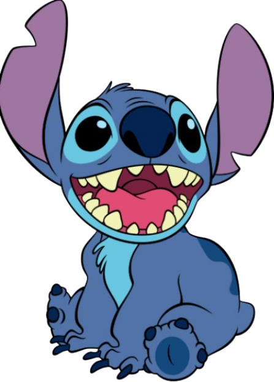

I am happy to share a bit about my life and background. My personal history begins on another continent, I was born in Shanghai, China, but I came to America when my family and I decided to move for a job opportunity just around the time I was entering kindergarten. Both of my parents attended universities back in China before we moved here, but I plan on studying here in America, which they both encourage and help me with. Right now, I'm a junior attending Canyon Crest Academy, and the main field I am interested in is STEM based activities, but I also think subjects like art and history are interesting. My favorite family member is my sweet boy, Dodo, a chihuahua mix I adopted from Helen Woodward Animal Shelter when I was in the seventh grade, and who is now celebrating his fifth birthday in April. I also absolutely adore my little sister, who is currently eight years old and in the third grade at Solana Ranch. There’s a significant seven-and-a-half-year age gap between us, but it just makes our relationship all the more special.
I love animals, both in the wild and as domestic pets, and I always want to adopt more animals into my household which my parents don't always support. I've previously kept a wide range of pets, including rodents and birds. I’ve previously had a hamster named Baby and three guinea pigs called Coco, Lele, and Baobao. I even raised three pet chickens from newborn chicks to healthy hens. I’ve wished for a cat ever since my elementary school days, and I also really want to adopt a pet reptile. I think snakes are gorgeous creatures that look like living jewels, although I do agree that they are intimidating. If I could do more research, I definently hope to own a snake in the future. My favorite color is green but I don't own much green things. I like darker shades of forest green and also paler ones. While I definitely try to steer clear of early mornings, loud screaming, most sports super hot weather, and intense fast cardio exercise, I love windy and cloudy weather, especially with a light breeze but not freezing cold. I also love watching people dance or participate in drag, I think their movements are elegant and beautiful. To top it all off, my favorite cartoon is Lilo and Stitch, and my favorite character in it is Scrump
I truly love engaging in a broad range of creative and relaxing pursuits, and I'm always looking for new things to capture my attention. I’ve gained practical experience with fun tactile crafts like sewing and crocheting, which allowed me to create several charming stuffed animals and even cute sock monkeys. I’m also an active collector, happily building up my collections of both figures and variousadorable stuffed animals. When I really need to unwind and relax, I enjoy low-key activities like listening to music, reading books, and, yes, taking frequent naps—I love a good nap! I keep moving, too, enjoying gentle physical activity like hiking, and I always bring my amazing dog along for those excursions. Historically, my interests included engaging in games and the traditional Japanese paper folding art of origami. But the absolute biggest passion of my life is my profound love for food, which is why my ultimate life goal is to travel extensively around the world just so I can sample all the amazing cuisines from diverse cultures!